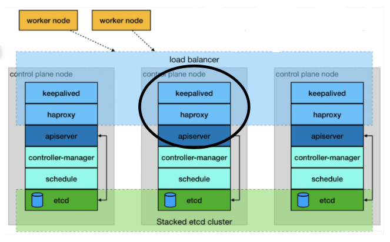
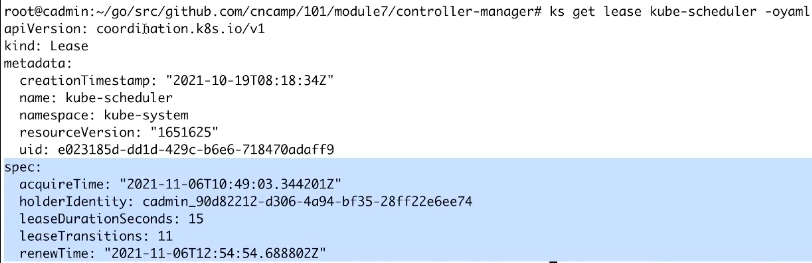

控制面 高可用 #
- 控制平面组件划分单独节点；
- 控制平面所在节点，应该确保在不同机架上；
- 保证控制平面的每个组件有足够的CPU、内存和磁盘资源；
- 减少或消除外部依赖； Cloud Provider API
- 核心组件以普通Pod形式加载运行时， 可能会调度到任意工作节点。
控制面 高可用方案 #
[1] [2]
架构图 #

-
load balancer 虚ip
-
controller-manager： 用lease来实现controller-manager和scheduler的leader election
